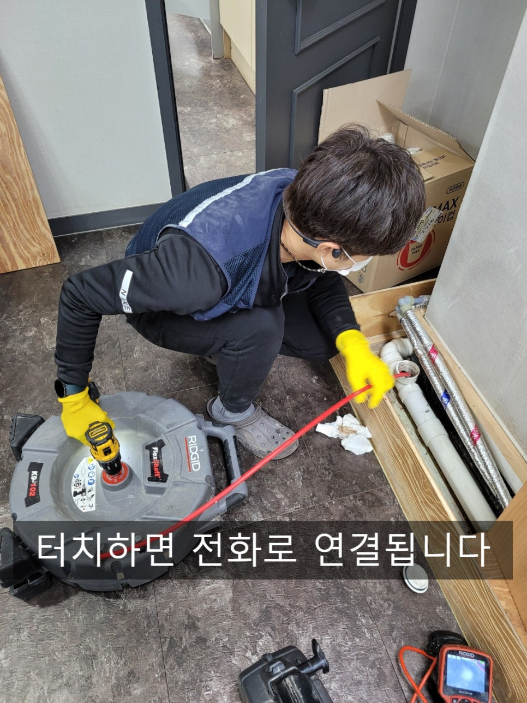
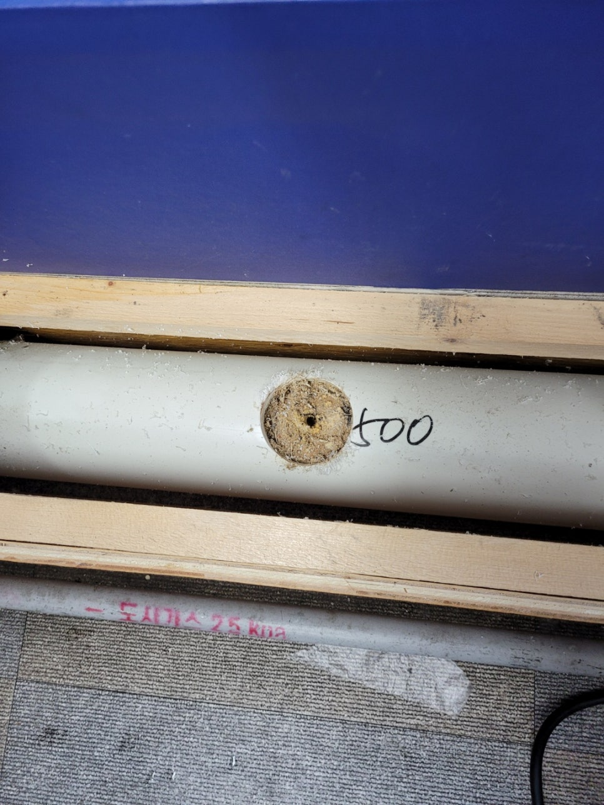
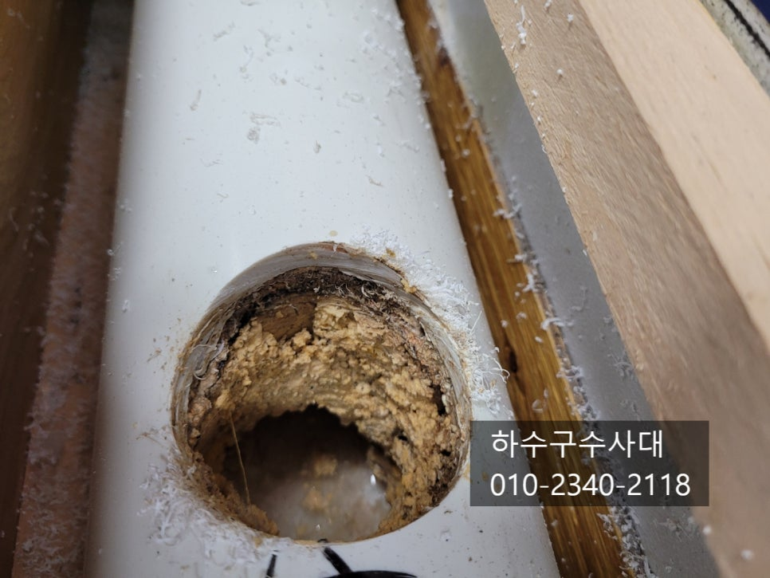
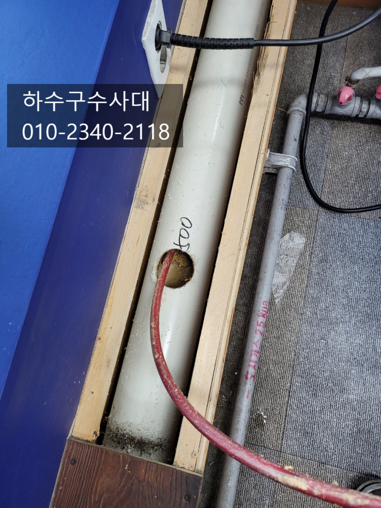
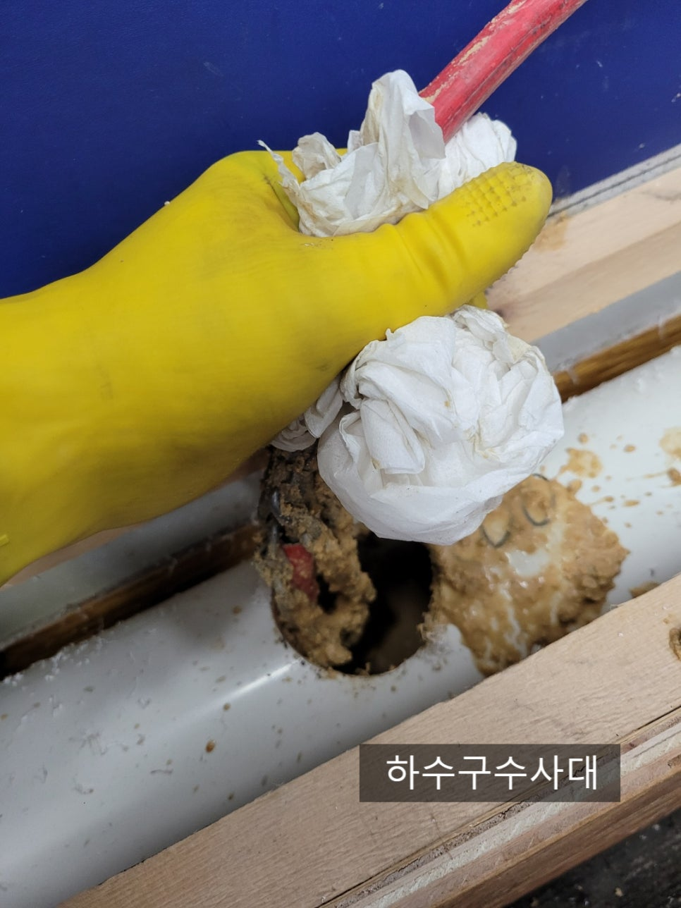
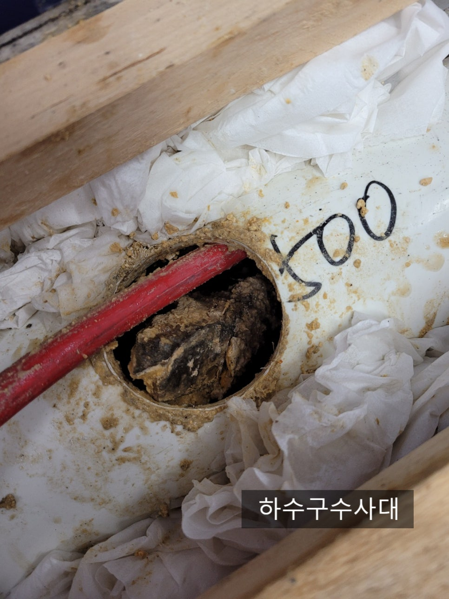
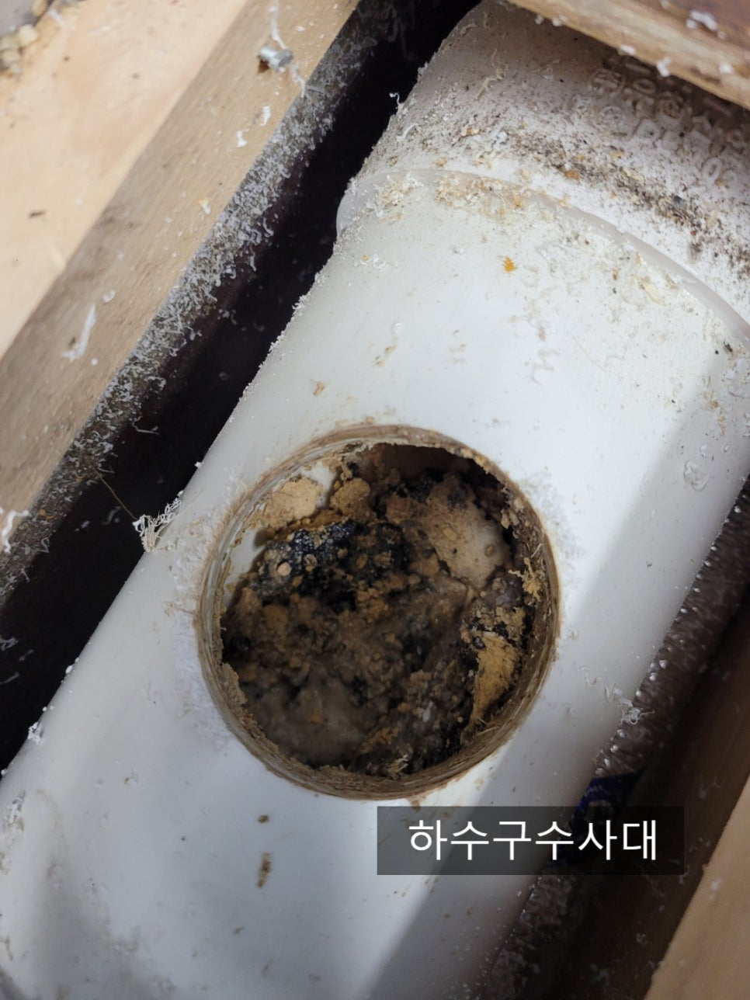
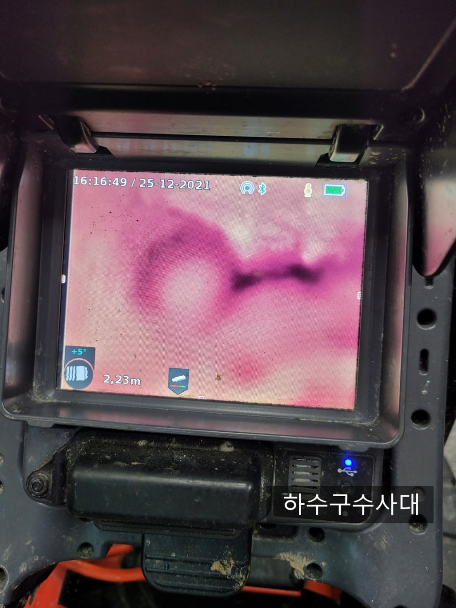

🏠 식당 상가 병점 동탄 하수구배관청소
서울 병점 싱크대막힘 전문 시공 후기

📋 작업 개요
- 위치: 서울 병점, 병점, 서울
- 서비스 유형: 싱크대막힘, 하수구막힘, 배관막힘, 누수수리, 역류해결, 뚫는업체, 배관청소, 고압세척
- 작업 일시: 2021. 12. 27. 0:35
- 업체명: 하수구수사대 (010-5615-2118)
🔍 문제 상황
식당 상가 병점 동탄 하수구배관청소
안녕하세요
"하수구수사대"입니다.
오늘은 요리학원에서 하수구가 막혔다는
연락을받고 출동하였는데요 2틀전에도
업체를 불러 스프링으로 뚫었지만 2틀만에
또 막혀 하수구배관청소를 의뢰해 주셨습니다.
요리학원을 개원하고 5년동안 청소없이 막힐때마다
스프링으로 뚫어서 쓰셨고 자주막히는것 같아
스프링 기계까지 구비하고 계셨습니다.
요리학원의 배관구조상 배관이 길고 구배가 좋지않아
물이 고여있는구간이 많아 기름슬러지가 쌓일수 밖에 없는데요
오늘 방문한 요리학원도 마찬가지로 기름덩어리가 엄청나게
많이 쌓여 있는것을 확인할수 있습니다.
배관내부에 80%이상 기름이 쌓여 굉장히 심한 상태였습니다.
구조적인 것을 바꾸려면 비용이 많이 들고 바꾼다고해도
기름을 많이 쓰기때문에 어차피 시간이 지나면 기름이
쌓이기 때문에 정기적으로 배관청소를 하시는게 더 효율적입니다.
배관에 기름덩어리가 너무크고 많아 모두 갈아내고

🔎 원인 분석
💡 전문가 진단: 하수구수사대010-2340-2118
빼내는 반복작업을 해주었는데요 이유는 내부에는 100mm배관인데
최종적으로 물이 나가는 배관은 50mm로 되어있기 때문입니다.
기름덩어리가 너무커시 밖으로 배출할수가 없고
또 막힐우려가 있어 모두 빼내는 작업을 일일이 할수 밖에없답니다.
정말 역대급으로 배관에 기름이 많았는데요
일반적으로 100mm배관이면 고압세척으로 하는데
이곳은 실내이고 바닥은 방수가 전혀 되어 있지 않아
고압세척으로 작업불가한 곳이에요.
작업공간도 협소해 일일이 장비로 깨고 흡입하여
빼내는 작업을 반복적으로 하는데 너무 힘든시간이였습니다
이곳 요리학원은 중식,양식,한식,바리스타,제과제빵 등 여러가지
전문자격증및 취업위주의 교육을 하다보니
요리수업이 거의 매일 있어 기름 사용량도 많았을거라고
추측이 됩니다.
원장님께서도 막혀있을거라고 예상은 했는데 막상
배관내부상태를 보니 이정도 일거라고는 상상도 못했다고 하셨어요.
하수구수사대
010-2340-2118
아무래도 요리학원이라 학생수도 많고
하수구에 음식물기름이 흘러들어가는걸 일일이

🔧 작업 과정
관리를 하기란 쉽지 않을 겁니다. 싱크대도 여러개사용하고
배관도 길다보니 구배가 좋지않아 사용관리는 어렵고
정기적인 점검하고 청소를 하는것이 좋답니다^^
다음은 제과제빵 쪽 라인도 점검을 해봤는데요
이곳도 마찬가지로 배관에 기름기가 많이 붙어있는것을
확인할수가 있었습니다.
내시경카메라를 내부를 보면서 청소를 해주고
배관에 혹 다른 이물질이 없는지 체크를
해주는것이 중요하고
간혹 싱크대호스나 다른이물질 때문에 물흐름을
방해하여 기름이 쌓이는 원인이 되기도 하기 때문입니다.
하수구가 막히게 되면 물이 바닥으로 역류를 하는데요
이곳도 몇달전에 하수구가 막혀 역류를 했다고 해요.
바닥은 방수가 되어있지않아 지속적으로 물이 역류한다면
밑에상가로 누수가 생길수도 있는부분이라 하수구가
막힌다면 꼼꼼히 살펴 봐야해요. 간혹 밑에 상가 또는
사무실에 고가의 전자장비가 있다면 정말 큰 피해를 볼수
있기 때문이에요.
일시적으로 막힘증상이 나타날수도 있지만
기름을 흘려보내는 싱크대의 경우는 대부분
기름슬러지로 배관이 좁아져 좁아진 구멍에
작은 이물질이 끼면 막힘증상이 나타나는 증상이기
때문에 미리미리 대비를 하는게 좋답니다^^
하수구배관청소가 끝난뒤 내시경카메라로 확인을 해보니
깨끗하게 청소는 되었지만 구조적으로 구배가 좋지않아
물이 고여있는것이 보여집니다.
저 물위에 기름이 떠서 배관옆쪽부터 차츰차츰 붙어 위로 점점
올라가는데 시간이 꽤 오래걸리기 때문에
관리만 잘해주신다면 물이 고여있어도 기름을
붙지않기 할수가 있어요. 문제는 물이 고여있는지
없는지는 내시경카메라로 봐야한다는게 함정이네요 ㅜㅜ


✅ 작업 완료
물을 모두틀어놓고 물이 잘 빠져나가는지
확인을 해주고 작업을 마무리 할 수 있었는데요
고객님께서도 5년동안 너무 자주 뚫는것 보다는
정기적으로 청소를 해주는것이 좋겠다고
정기적인 청소를 맡겨주셨습니다^^
저희 "하수구수사대"는 서울/경기/인천 전지역에서
활동하고 있으며 1년 as를 보장해 드리고 있으니
언제든지 연락주시기 바랍니다^^




⚠️ 베란다 누수 및 방수 관리 방법
- ✅ 비가 많이 올 때 창틀 주변이나 아래층 천장에 얼룩이 생기는지 정기적으로 확인해 보세요.
- ✅ 우수관 주변 실리콘 마감이 들뜨거나 깨진 틈새가 있는지 손상 여부를 수시로 체크하세요.
- ✅ 베란다 바닥 타일의 줄눈(메지)이 소실되면 그 틈으로 물이 침투하여 누수가 유발됩니다.
- ✅ 누수 의심 증상 발견 시 방치하면 아래층 손실이 커지므로 즉시 전문가의 진단을 받으십시오.
💡 핵심 정리
- 확실한 장비 작업(내시경 점검 및 샤프트 스케일링)으로 원인을 뿌리 뽑습니다.
- 작업 후 1년 이내에 동일한 부위 재발 시 100% 무상 A/S 서비스를 보장합니다.
- 서울 · 경기 · 인천 전 지역에 24시간 언제든 긴급 출동할 수 있도록 항시 대기 중입니다.
❓ 자주 묻는 질문 (FAQ)
🚨 서울 병점 싱크대막힘 문제로 고민이신가요?
정확한 원인 진단과 확실한 시공으로 재발 없는 해결을 약속드립니다.
24시간 긴급 출동 | 서울 · 경기 · 인천 전지역 | 1년 내 재발 시 무상 A/S